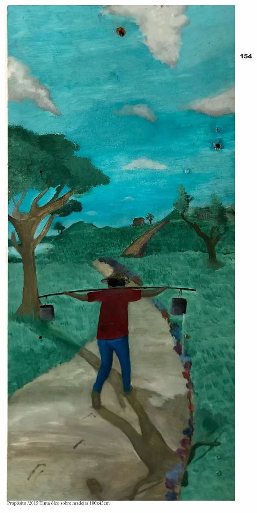
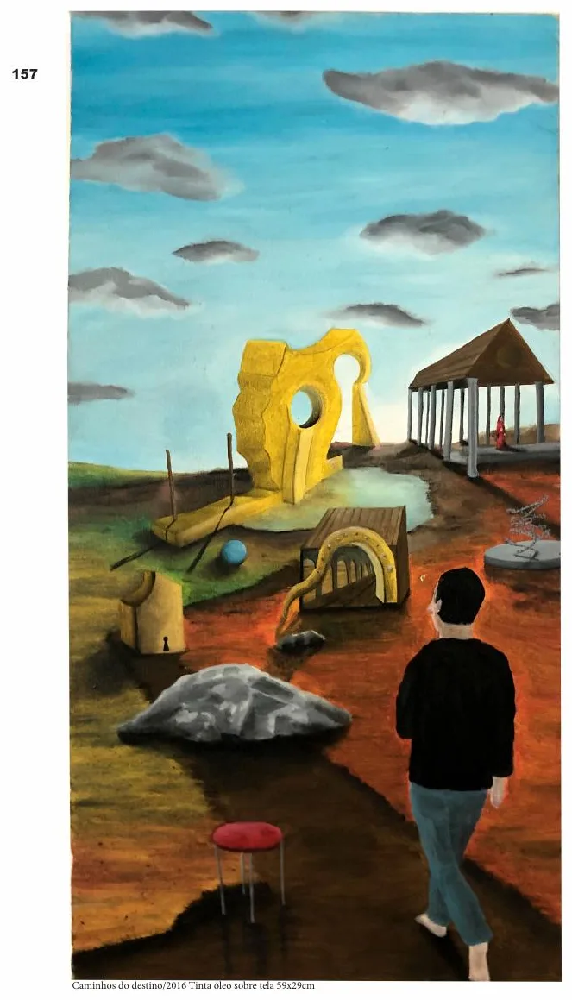
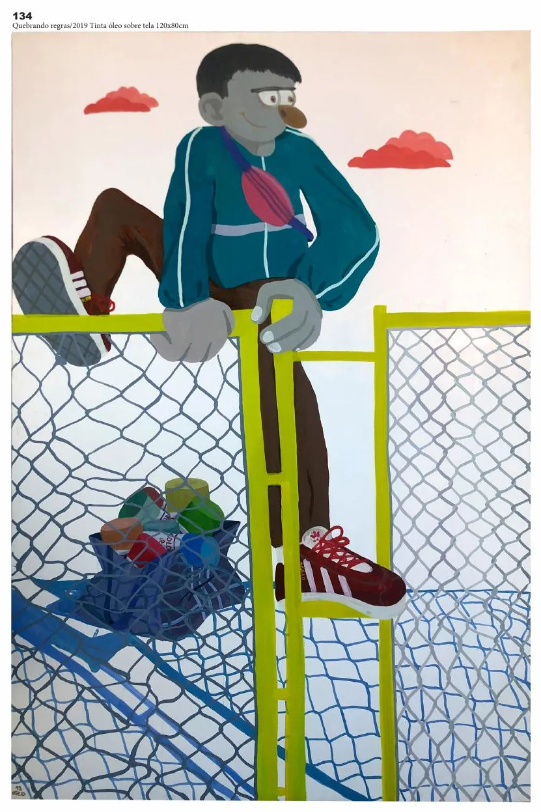

Sobre
OGEID
OGEID é o nome artístico e plataforma criativa de um artista independente cuja produção transita entre artes visuais, tatuagem, desenho, pintura, escultura, animação e design.
Sua pesquisa visual é atravessada pela cultura urbana, pela experimentação gráfica e pela construção de uma linguagem autoral.
Desde 2023, desenvolve uma investigação pictórica de orientação neoexpressionista, utilizando símbolos, personagens e referências da cultura urbana para construir composições que dialogam com experiências pessoais, relações humanas, filosofia e cotidiano.
A tatuagem ocupa um lugar central em sua prática, especialmente por meio da criação contínua de flash tattoos autorais.
Paralelamente, desenvolve projetos independentes que exploram diferentes suportes, materiais e possibilidades de circulação da arte.
Sua produção busca aproximar expressão artística, identidade visual e cultura independente.
Produção por ano
2024161 imagens · Animações, Flash & desenhos, Ilustração & cor, Logotipos & drops2022104 imagens · Flash & desenhos, Ilustração & cor202127 imagens · Flash & desenhos, Ilustração & cor202049 imagens · Ilustração & cor, Murais & rua, QuadrosFormação
Pesquisa artística
Símbolos, personagens e referências da cultura urbana em composições que dialogam com experiências pessoais, relações humanas, filosofia e cotidiano.
Linguagens e técnicas
Projetos relevantes
Diário de desenhos: uma ideia por dia, em caneta hidrográfica e marcador permanente.
Linha de prints e coleção de quadros vendida por direct.
Primeiros flashes em preto e branco para tatuagem.
Livro de 84 páginas com 10 anos de trabalho, dividido em séries.


